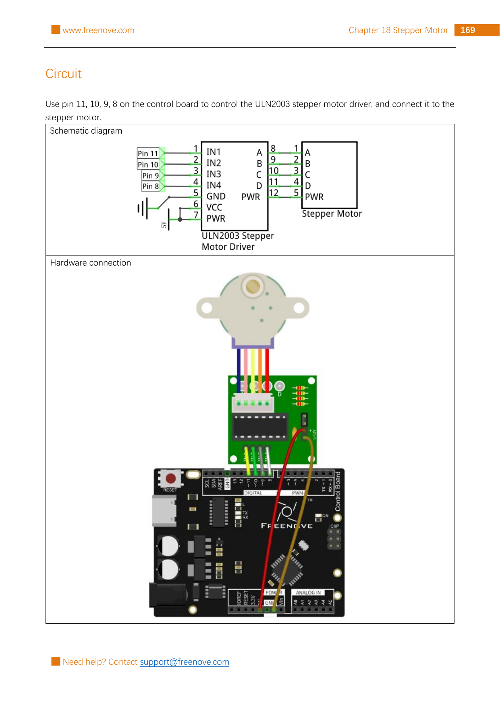

Use Arduino pins 11, 10, 9, and 8 to send an ordered four-signal pattern to a ULN2003 driver. The matching geared stepper will make 2,048 controlled steps in one direction, pause, then return.
Gather the parts
Uno-compatible control board and USB cable
Matching four-phase geared stepper motor
Matching ULN2003 stepper-motor driver board
6 female-to-male jumper wires
Safety boundary: this is a low-voltage kit build. Unplug USB before connecting or moving wires. Keep fingers, hair, sleeves, and loose items away from the shaft while it moves, and let the shaft turn freely—do not force, hold, or block it. Stop and unplug if a part gets hot, smells unusual, or behaves unexpectedly. Never connect the motor or driver directly to an Arduino pin, a wall outlet, mains wiring, or an unknown power source; use the matching ULN2003 board and the source circuit only.
Build it, one check at a time
Step 1 — Meet the driver
Keep USB unplugged. A stepper does not spin because of one steady signal like a simple DC motor. Its coils need an ordered pattern. The ULN2003 board sits between the Arduino and the matching four-phase geared motor, turning the Arduino’s small control signals into motor-driver signals. Plug the motor’s keyed connector into the driver board gently; do not force it.

Reference image: Freenove Ultimate Starter Kit, Tutorial.pdf, Chapter 18, Project 18.1, printed page 169 / PDF page 173. Rasterized unchanged from the permitted source pack under CC BY-NC-SA 3.0; the public tutorial and licence source are linked in Reference pages.
Step 2 — Connect the four control signals
Copy the source circuit exactly: Arduino pin 11 → IN1, pin 10 → IN2, pin 9 → IN3, and pin 8 → IN4 on the ULN2003. These labels matter more than the physical order of your jumpers. Check each wire against the printed label before adding power.
Do not connect any driver input directly to the motor connector. If your driver labels, connector, or motor do not match the pictured kit, stop instead of guessing.
Step 3 — Give the driver its low-voltage supply
Still following the source circuit, connect Arduino 5 V → VCC and Arduino GND → GND on the ULN2003. The source notes that its driver board’s PWR and VCC are connected by default; leave the board configured as supplied. Do not substitute a separate supply, remove jumpers, or change wiring unless you have the documentation for your exact driver and motor.
Inspect the complete build before reconnecting USB: six jumpers in the source positions, motor plugged into the driver, no loose wire strands, and a clear space around the shaft.
Step 4 — Plan a precise turn
The supplied motor has 32 full steps inside its housing and a 1:64 gear reduction. For its output shaft, 32 × 64 = 2048 full steps per turn in the source project. The number of calls to moveOneStep() sets the turn amount; the pause between calls sets the speed. That is why a stepper can repeat a planned movement.
This lesson uses the source’s simple one-coil-at-a-time sequence. It is intentionally for this matching motor and driver—not a universal recipe for every stepper.
Step 5 — Upload the spinner sketch
Reconnect USB, select your Uno-compatible board and port, then upload this original presentation of the source-validated pin order, one-turn count, sequence, and 2 ms step timing. It makes one full turn, waits one second, makes one full turn back, and repeats. The short delay() inside the movement loop controls speed; while a sketch is in delay(), it is not doing its ordinary loop work.
What you should see: the output shaft turns one way, pauses, then returns the other way. If it only vibrates, does not move, or becomes hot, unplug USB before inspecting the six connections and the matching motor/driver pairing against the source circuit. Do not hold the shaft to “help” it, and do not try a stronger or unknown power source.
Tiny challenge
Before changing anything, predict the result of replacing stepsPerTurn with stepsPerTurn / 4. Try it only with the same matching low-voltage parts. Does the shaft make about a quarter-turn before it returns? Put the full-turn value back when you finish.
The unchanged reference image and upstream material are from Freenove’s Ultimate Starter Kit and are used under CC BY-NC-SA 3.0. Attribution, noncommercial, and ShareAlike requirements apply. The learner-facing instructions and adapted, clearly named sketch are original.